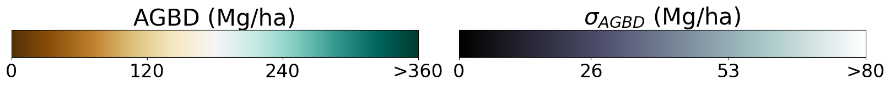
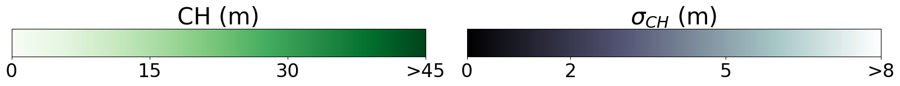
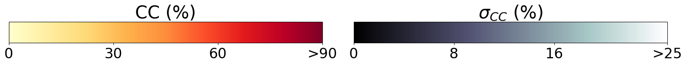

This application provides the visualization of Aboveground Biomass Density (AGBD), Canopy Height (CH), Canopy Cover (CC) and their respective uncertainties for 9 globally distributed sample tiles corresponding to the year 2023. All tiles cover an area of 3° x 3° at a resolution of 10 m/pixel. They correspond to the samples provided by the Zenodo repository referenced as https://doi.org/10.5281/zenodo.15269923 which is a subset of the full global dataset available for download from a public AWS S3 bucket. For further instructions on how to get access to the full dataset, we refer to the Zenodo reference.
These maps are accompanying the publication
Weber, M.; Beneke, C.; Wheeler, C. Unified Deep Learning Model for Global Prediction of Aboveground Biomass, Canopy Height, and Cover from High-Resolution, Multi-Sensor Satellite Imagery. Remote Sens. 2025, 17, 1594. https://doi.org/10.3390/rs17091594
which provides the details on the model approach and extensive evaluation metrics.
The scales of the various map layers are defined by the following colormaps:


